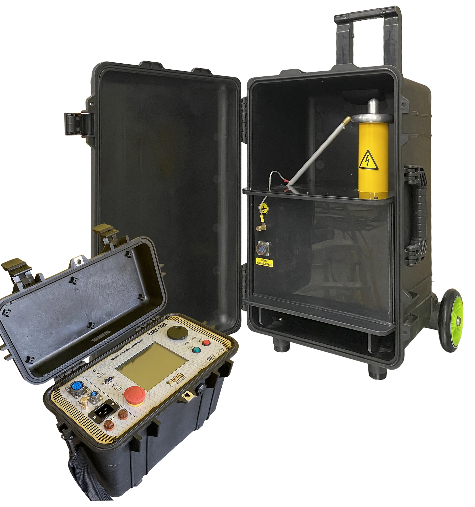

AC/DC High-Voltage Test Sets
SKAT-70C / 100C Digital Dielectric Testers
Microcontroller-controlled AC/DC test sets for cable, transformer, and insulation testing.
The SKAT-70C and SKAT-100C are advanced digital dielectric testers featuring a high-contrast LCD interface and precise microcontroller-driven regulation. Available in portable and 19\" rack-mount configurations, these units deliver reliable high-voltage AC and DC outputs for demanding insulation testing applications.
About the product
The SKAT-70C and SKAT-100C series represent the next generation of digital dielectric testers. Featuring a user-friendly LCD interface and microcontroller-driven control, these units offer precise regulation and measurement of high-voltage AC and DC outputs for demanding insulation testing applications.
With automatic breakdown detection, overcurrent protection, and a dedicated external safety lamp output, these testers are designed with both performance and operator safety in mind. Multiple form factors are available, including portable and 19\" rack-mount configurations, making them suitable for laboratory and field use.
SKAT-70C: Product Overview
A general overview of the instrument's key features and capabilities.
Product documents
Сертификаты
Related products
Technical specifications
Note: Specifications are subject to change without notice. For custom ranges and configurations, please contact our sales team.
FAQ
Interpreting test results
For detailed guidance on cable and insulation testing, refer to your equipment's user manual and the following:
- IEC 60060 - High-voltage test techniques
- IEC 60243 - Electrical strength of insulating materials
- IEEE 400 - Guide for field testing of shielded power cable systems
Troubleshooting & Software updates
- Test does not start: Check if the high-voltage block is properly connected and the safety interlock is closed.
- Display not responding: Verify power supply and internal connections.
- Error during test: Refer to the user manual for error code explanations.
Application and academic support
For detailed application notes and technical resources, please contact our support team.
Contact Support